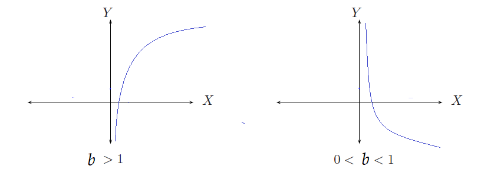

Matemáticas
Auditoría e Ingeniería en Control de Gestión
Contador Público y Auditor

Función Logarítmica
Sea \(a>0\), \(a\neq 1\). La función logaritmica \(\log_a : \mathbb{R}^+ \longrightarrow \mathbb{R}\) se define por la relación \[\log_a (x) = y \qquad \text{si y sólo si} \qquad a^y = x\]
Determinar los siguientes logaritmos, cambiando a una expresión exponencial.
-
\(\log_3 81 = y\)
-
\(\log_8 2 = b\)
-
\(\log_{10} 0,001 = x\)
-
\(\log_\frac{1}{5} 25 = t\)
Grafíco de una función logarítmica

Sea \(f(x) = \log_a (x)\)
-
Dom\((f) = ]0,\, +\infty[\)
-
Rec\((f) = \mathbb{R}\)
-
Si \(a>1\) entonces \(f\) es creciente
-
Si \(0<a<1\) entonces \(f\) es decreciente
-
\(f\) es inyectiva luego: \(\log_a x = \log_a y \quad \Longrightarrow \quad x=y\)
Función logarítmica
-
Calcular \(\log_2 (-4)= \qquad \quad \log_5 0 = \qquad \quad \log_a 1 =\)
-
Resolver la ecuación \(\displaystyle \log_7 (2x+3) = \log_7 x^2\)
Bases más usadas:
-
Si \(a=10\), entonces \(\log_{10} ( x) = \log (x)\) Se conoce como logarítmo común. Luego \[\log(x) = y \quad \Longleftrightarrow \quad x = 10^y\]
-
Si \(a=e\), entonces \(\log_e ( x) = \ln (x)\) Se conoce como logarítmo natural. Luego \[\ln(x) = y \quad \Longleftrightarrow \quad x = e^y\]
Ejemplos
- Calcular los siguientes logarítmos
- \(\log 1000\)
- \(\ln 1\)
- \(\log_5 25\)
- Resolver las siguientes ecuaciones
- \(\log_3 x = 4\)
- \(\ln (x+2) = 6\)
- \(e^{3x} = 7\)
-
- \(\log 1000 = y \Longrightarrow 10^y = 1000 = 10^3 \Longrightarrow y=3\)
- \(\ln 1 = y \Longrightarrow e^y = 1 \Longrightarrow y=0\)
- \(\log_5 25 = y \Longrightarrow 5^y = 25 = 5^2 \Longrightarrow y=2\)
-
- \(\log_3 x = 4 \Longrightarrow x = 3^4 = 81\)
- \(\ln (x+2) = 6 \Longrightarrow x+2 = e^6 \Longrightarrow x = e^6 -2\)
- \(\displaystyle e^{3x} = 7 \Longrightarrow 3x = \ln 7 \Longrightarrow x = \frac{\ln 7}{3}\)
Propiedades
Sean \(a>0, \, a\neq 1\), \(x, y \in \mathbb{R^+}\), \(n \in \mathbb{R}\)
-
\(\log_a 1 = 0\)
-
\(\log_a a = 1\)
-
\(\log_a ( x y) = \log_a x + \log_a y\)
-
\(\log_a \left ( \frac{x}{y} \right ) = \log_a x - \log_a y\)
-
\(\log_a ( x^n) = n\log_a x\)
-
\(\displaystyle a^{\log_a x} = x\), en particular \(\qquad 10^{\log x} = x \qquad \text{y} \qquad e^{\ln x} = x\)
Fórmula de cambio de base Sean \(a,b\) números reales positivos y distintos de 1. Entonces \[\log_a (x) = \frac{\log_b (x)}{\log_b (a)}\]
Ejemplos
-
Expresar en un sólo logarítmo
-
\(\log 7 + \log 5\)
-
\(\ln x - \ln y\)
-
\(2\log x + \log y - \log (x+y)\)
-
-
Resolver las siguientes ecuaciones
-
\(\log (3x-2) = \log (x+7)\)
-
\(2^{x+1} = 5\)
-
\(\log_3(x+5)+\log_3(x-4)-\log_3x=2\)
-
Volviendo al ejemplo que quedó pendiente de la clase pasada
A causa de una recesión económica, la población de cierta área urbana disminuye a razón de 1% anual. Al inicio la población era de 100.000 habitantes. ¿En cuántos años la población será aproximadamente de 94.000 habitantes?
Hay que resolver la ecuación \(P(t)=100000e^{-0,01t}=94000\)
Aplicación
Suponga que la producción diaria de unidades de un nuevo producto en el \(t\)-ésimo día de una corrida de producción está dada por:
\[q = 500 (1-e^{-0,2t})\]
Tal ecuación se llama ecuación de aprendizaje, la cual indica que conforme pase el tiempo, la producción por día aumentará. Esto puede deberse a un aumento en la habilidad de los trabajadores. Determine a la unidad completa más cercana la producción en:
-
El primer día
-
En el décimo día después del inicio de una producción.
-
¿Después de cuántos días se alcanzará una producción diaria de 400 unidades? Proporcione sus respuestas redondeadas al día más cercano.
Aplicación
La concentración de un medicamento en un órgano al instante \(t\) (en minutos) está dada por \[x(t) = 0.08 + 0.12 e^{-0.02t}\] donde \(x(t)\) son gramos/centímetros cúbicos (\(gr/cm^3\)).
-
¿Cuál es la concentración pasado 1 hora?
-
¿Cuánto tiempo tardará en alcanzar 0.09 \(gr/cm^3\) de medicamento en el órgano?